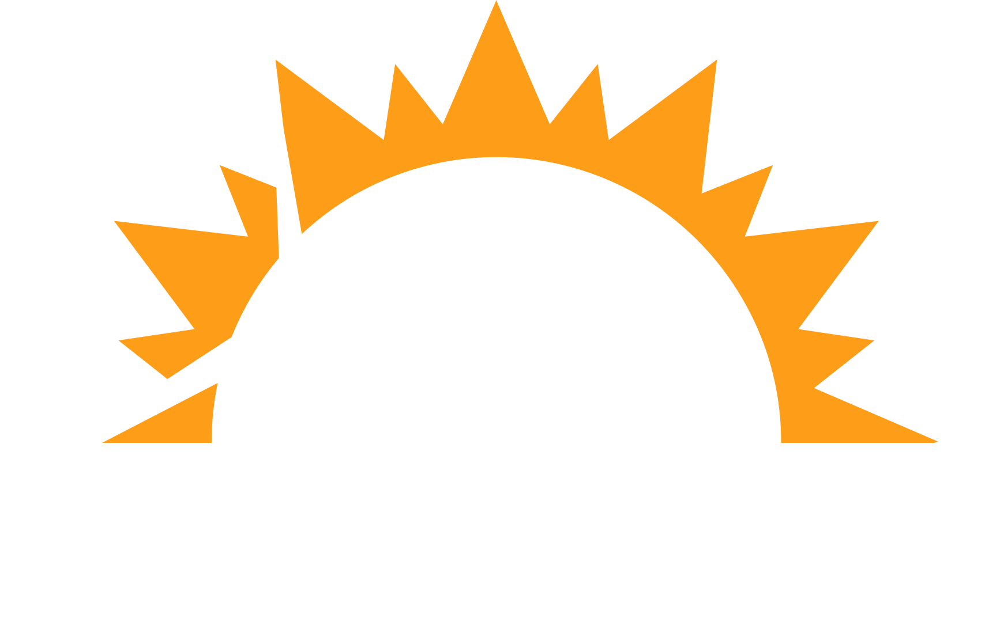
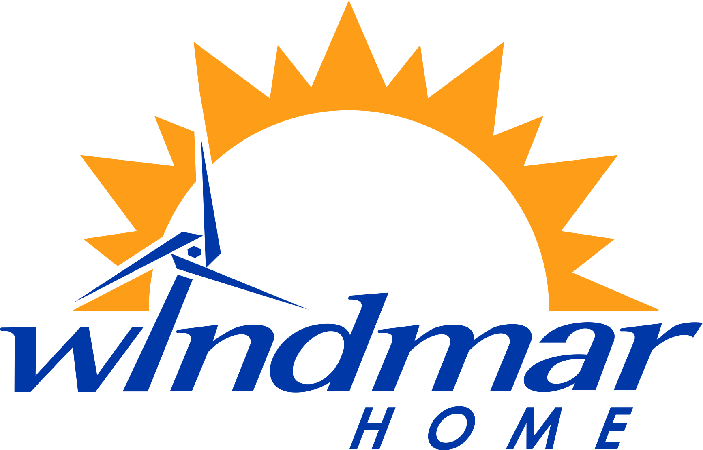

WindMar Home invita a Susej y al equipo de Canvaceo a una colaboración de tres Reels, uno cada dos semanas, grabados en tres regiones distintas de Puerto Rico.
El propósito no es vender un producto. Es llegar a sitios donde la conversación sobre energía se tiene todos los días, y contarlo en la voz de quien vive allí.
En WindMar creemos que nuestro trabajo no termina con la venta. Nuestro propósito es estar con nuestros clientes paso a paso y aportar a la comunidad para echar a Puerto Rico hacia adelante.
Esta colaboración tiene algo que las demás no: además del contenido, deja diez equipos en diez casas. No es una mención — es algo que se queda.
Como compensación por la colaboración, WindMar Home entrega:
| Equipo | Cantidad | Valor |
|---|---|---|
| Anker SOLIX C1000X Estación de energía portátil |
1 | $1,095 |
| Powerbanks Anker Para entregar en las casas visitadas |
10 | $45 c/u $450 |
| Valor total de la colaboración | $1,545 | |
| Entregables | 3 Reels con el equipo de Canvaceo, publicados en colaboración con WindMar Home |
| Cadencia | Uno cada dos semanas |
| Regiones | Cada Reel en una región distinta de la isla — las tres, por definir |
| Formato | Reel de Instagram publicado como colaboración, para que salga en tu perfil y en el de WindMar a la vez |
| Creatividad | Libertad creativa total: ustedes deciden el concepto, el tono y el estilo |
| Aprobación | Revisión breve de WindMar antes de publicar, solo para validar los datos técnicos |
| Vigencia | fecha de inicio por confirmar · seis semanas desde el primer Reel |
Tres Reels a seis semanas significa que el valor por pieza es de $515, y que la colaboración vive el tiempo suficiente para que la audiencia vea una historia, no un anuncio suelto.
Los diez powerbanks no son parte de la compensación: son el material de la activación. La idea es entregarlos en las casas que se visiten durante la grabación de los Reels.
Falta acordar cómo se reparten: si van los diez en el primer Reel o se distribuyen entre los tres, y quién escoge las casas. Es la única parte de la mecánica que no está definida.
Sin promesas de ahorro ni cifras: la pieza cuenta lo que pasó, no lo que podría pasar.
| Pieza | Cuándo | Región |
|---|---|---|
| Reel 1 | Semana 1 | por definir |
| Reel 2 | Semana 3 | por definir |
| Reel 3 | Semana 5 | por definir |
La entrega de cada Reel se acuerda con el equipo de Canvaceo. WindMar revisa antes de publicar, y esa revisión se cuenta dentro de las dos semanas — no se le suma por encima.
Gracias por considerarlo. Si algo de aquí no cuadra, se habla y se ajusta — la idea es que funcione para los dos lados.